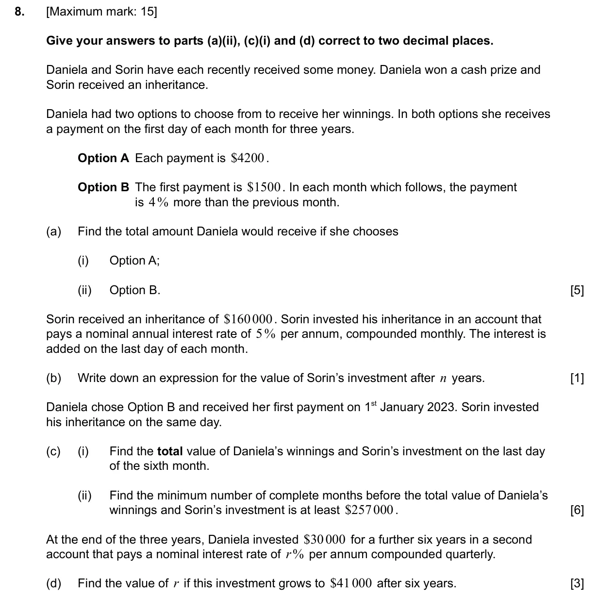
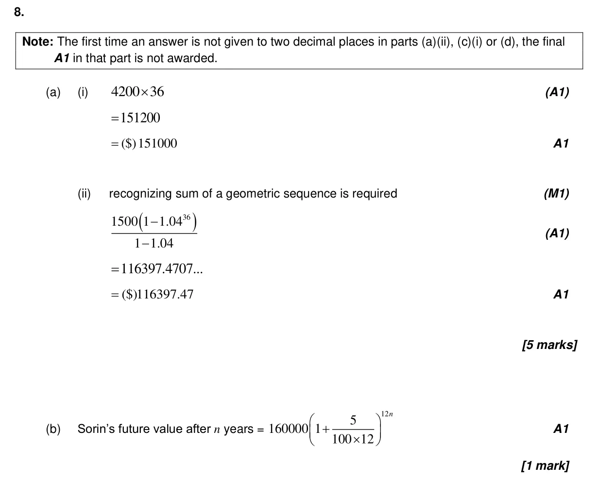
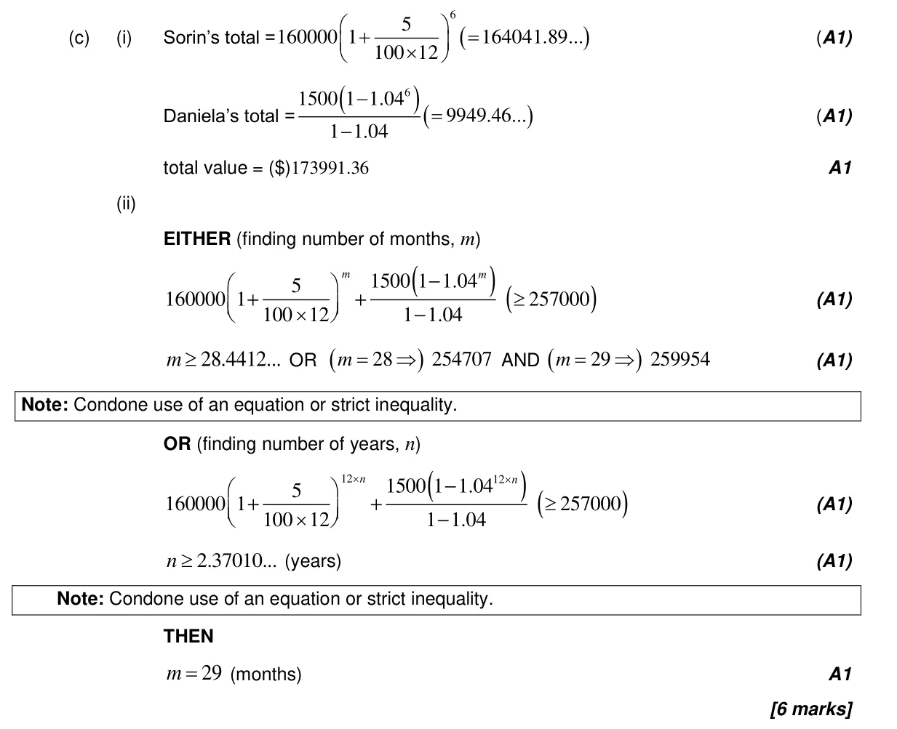
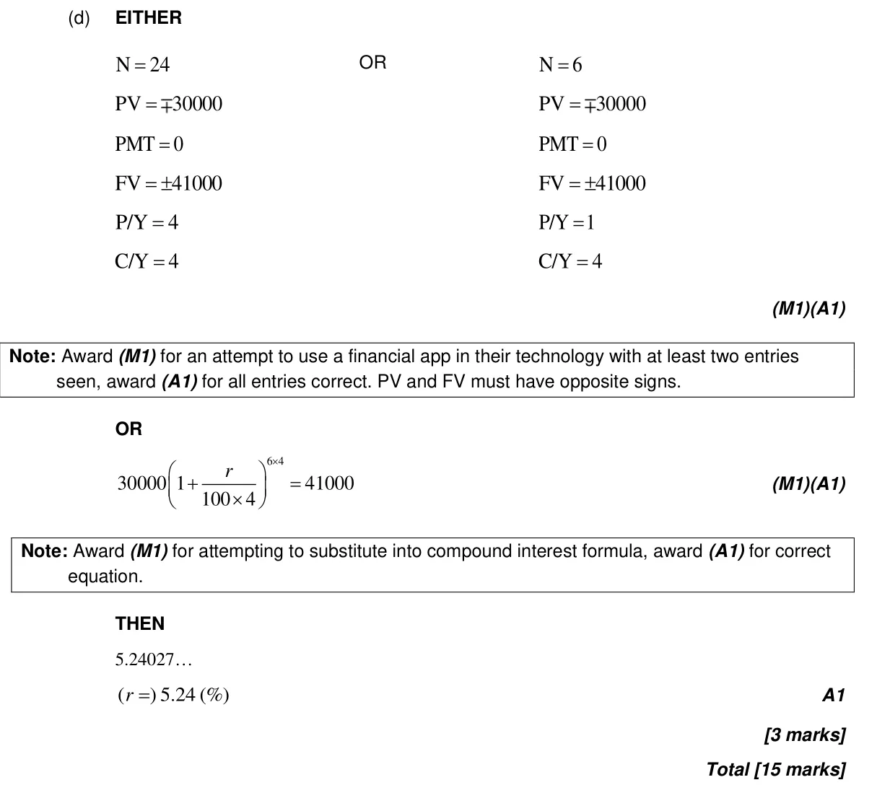

15 marks P2 TZ1 Section B Calculator 1.4 Financial applications of geometric sequences and series1.3 Geometric sequences and series2.10 Solving equations graphically and analytically Question Hide breakdown abcd Markscheme 